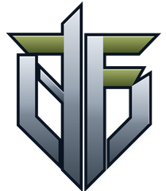

FOIG
First Offensive Intervention Group
Saubere, schwere Militärtechnik in Blau und Oliv. Eliteeinheit ist die Stahlfaust-Division. Auf Vorarlbergerisch heißt „Foig!“ so viel wie „Gehorche!“. Wahlspruch: „Fortschritt durch Ordnung, Eisen und Glut.“
Clean, heavy military hardware in blue and olive. Its elite unit is the Steel Fist Division. In the Vorarlberg dialect, “Foig!” means “Obey!”. Motto: “Progress through order, iron and embers.”
- MechanikMechanics
- Belagerungsmodus, schwere Panzer, Derylum-Resonator, Aerial Complex mit Fallschirmspringern, Aufklärung und NachschubSiege mode, heavy tanks, Derylum Resonator, Aerial Complex with paratroopers, reconnaissance and supply drops
- FahrzeugeVehicles
- Panther A1Sammler DR-7CDR-7C harvesterJägerBasiliskArtillerieArtilleryPionier PB-1PB-1 pioneer vehicleIgelOtter
- InfanterieInfantry
- SturmtruppAssault squadMG-TruppMG squadGrenadiereGrenadiersRaketentruppRocket squadSanitäterMedicsIngenieureEngineers
- LuftAir
- Hangar mit Kampfhubschrauber, TH-2 Boreas (Transporter) und SK-6 Atlas (Kranhubschrauber); Aerial Complex mit Fallschirmspringern, Aufklärungsflug und NachschubabwurfHangar with attack helicopter, TH-2 Boreas (transport) and SK-6 Atlas (heavy-lift crane); Aerial Complex with paratroopers, recon flights and supply drops
- AbwehrDefense
- Hydra, eine mehrköpfige Raketenabwehr, deren Köpfe nachwachsen, solange Strom da ist; Geschützturm, Infanteriebunker, Derylum-ResonatorHydra, a multi-headed missile defense whose heads grow back while it has power; gun turret, infantry bunker, Derylum Resonator
- StromPower
- Wind, mit SturmabschaltungWind, with storm shutdown
- SuperwaffeSuperweapon
- Stahlhagel: Bomberverband legt einen Teppich entlang einer LinieSteel Hail: a bomber formation lays a carpet along a line
- RaketenMissiles
- Startschacht unter der Erde: eine präzise Rakete gegen ein Schlüsselgebäude, alle 8 bis 10 MinutenAn underground launch shaft: one precise missile against a key building every 8 to 10 minutes
Version 1Neue Namen: Kürzel + WindgottNew names: code + wind god